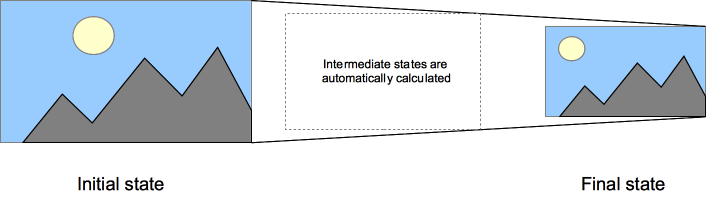

{{CSSRef}}
CSS transitions provide a way to control animation speed when changing CSS properties. Instead of having property changes take effect immediately, you can cause the changes in a property to take place over a period of time. For example, if you change the color of an element from white to black, usually the change is instantaneous. With CSS transitions enabled, changes occur at time intervals that follow an acceleration curve, all of which can be customized.
Animations that involve transitioning between two states are often called implicit transitions as the states in between the start and final states are implicitly defined by the browser.

CSS transitions let you decide which properties to animate (by listing them explicitly), when the animation will start (by setting a delay), how long the transition will last (by setting a duration), and how the transition will run (by defining a timing function, e.g. linearly or quick at the beginning, slow at the end).
The Web author can define which property has to be animated and in which way. This allows the creation of complex transitions. As it doesn't make sense to animate some properties, the list of animatable properties is limited to a finite set.
The auto value is often a very complex case. The specification recommends not animating from and to auto. Some user agents, like those based on Gecko, implement this requirement and others, like those based on WebKit, are less strict. Using animations with auto may lead to unpredictable results, depending on the browser and its version, and should be avoided.
CSS Transitions are controlled using the shorthand {{cssxref("transition")}} property. This is the best way to configure transitions, as it makes it easier to avoid out of sync parameters, which can be very frustrating to have to spend lots of time debugging in CSS.
You can control the individual components of the transition with the following sub-properties:
The shorthand CSS syntax is written as follows:
div {
transition: <property> <duration> <timing-function> <delay>;
}
This example performs a four-second font size transition with a two-second delay between the time the user mouses over the element and the beginning of the animation effect:
#delay {
font-size: 14px;
transition-property: font-size;
transition-duration: 4s;
transition-delay: 2s;
}
#delay:hover {
font-size: 36px;
}
<body> <p>The box below combines transitions for: width, height, background-color, transform. Hover over the box to see these properties animated.</p> <div class="box">Sample</div> </body>
.box {
border-style: solid;
border-width: 1px;
display: block;
width: 100px;
height: 100px;
background-color: #0000FF;
transition: width 2s, height 2s, background-color 2s, transform 2s;
}
.box:hover {
background-color: #FFCCCC;
width: 200px;
height: 200px;
transform: rotate(180deg);
}
{{EmbedLiveSample('Multiple_animated_properties_example', 600, 300)}}
If any property's list of values is shorter than the others, its values are repeated to make them match. For example:
div {
transition-property: opacity, left, top, height;
transition-duration: 3s, 5s;
}
This is treated as if it were:
div {
transition-property: opacity, left, top, height;
transition-duration: 3s, 5s, 3s, 5s;
}
Similarly, if any property's value list is longer than that for {{cssxref("transition-property")}}, it's truncated, so if you have the following CSS:
div {
transition-property: opacity, left;
transition-duration: 3s, 5s, 2s, 1s;
}
This gets interpreted as:
div {
transition-property: opacity, left;
transition-duration: 3s, 5s;
}
A common use of CSS is to highlight items in a menu as the user hovers the mouse cursor over them. It's easy to use transitions to make the effect even more attractive.
Before we look at code snippets, you might want to take a look at the live demo (assuming your browser supports transitions).
First, we set up the menu using HTML:
<nav> <a href="#">Home</a> <a href="#">About</a> <a href="#">Contact Us</a> <a href="#">Links</a> </nav>
Then we build the CSS to implement the look and feel of our menu. The relevant portions are shown here:
a {
color: #fff;
background-color: #333;
transition: all 1s ease-out;
}
a:hover,
a:focus {
color: #333;
background-color: #fff;
}
This CSS establishes the look of the menu, with the background and text colors both changing when the element is in its {{cssxref(":hover")}} and {{cssxref(":focus")}} states.
Care should be taken when using a transition immediately after:
.appendChild()display: none; property.This is treated as if the initial state had never occurred and the element was always in its final state. The easy way to overcome this limitation is to apply a window.setTimeout() of a handful of milliseconds before changing the CSS property you intend to transition to.
Transitions are a great tool to make things look much smoother without having to do anything to your JavaScript functionality. Take the following example.
<p>Click anywhere to move the ball</p> <div id="foo" class="ball"></div>
Using JavaScript you can make the effect of moving the ball to a certain position happen:
var f = document.getElementById('foo');
document.addEventListener('click', function(ev){
f.style.transform = 'translateY('+(ev.clientY-25)+'px)';
f.style.transform += 'translateX('+(ev.clientX-25)+'px)';
},false);
With CSS you can make it smooth without any extra effort. Add a transition to the element and any change will happen smoothly:
.ball {
border-radius: 25px;
width: 50px;
height: 50px;
background: #c00;
position: absolute;
top: 0;
left: 0;
transition: transform 1s;
}
{{EmbedGHLiveSample("css-examples/transitions/js-transitions.html", '100%', 500)}}
You can use the {{event("transitionend")}} event to detect that an animation has finished running. This is a {{domxref("TransitionEvent")}} object, which has two added properties beyond a typical {{domxref("Event")}} object:
propertyNameelapsedTimeAs usual, you can use the {{domxref("EventTarget.addEventListener", "addEventListener()")}} method to monitor for this event:
el.addEventListener("transitionend", updateTransition, true);
You detect the beginning of a transition using {{event("transitionrun")}} (fires before any delay) and {{event("transitionstart")}} (fires after any delay), in the same kind of fashion:
el.addEventListener("transitionrun", signalStart, true);
el.addEventListener("transitionstart", signalStart, true);
transitionend event doesn't fire if the transition is aborted before the transition is completed because either the element is made {{cssxref("display")}}: none or the animating property's value is changed.| Specification | Status | Comment |
|---|---|---|
| {{SpecName('CSS3 Transitions', '', '')}} | {{Spec2('CSS3 Transitions')}} | Initial definition |